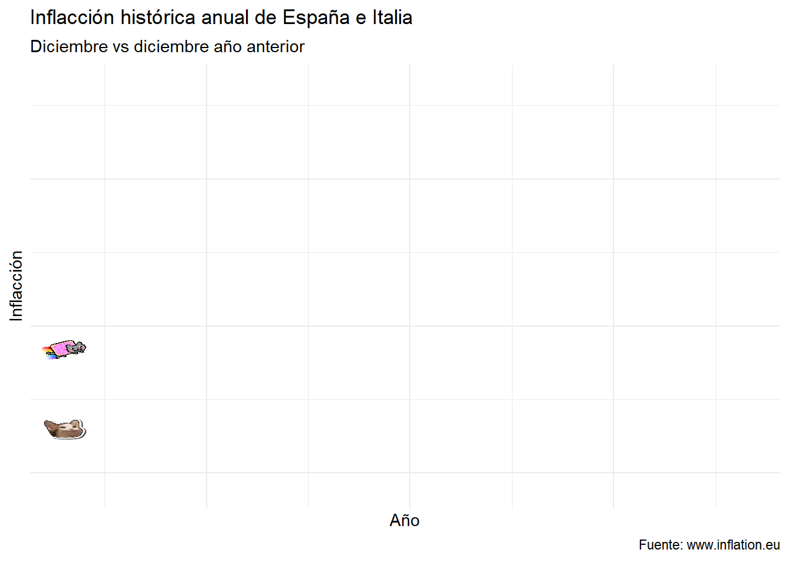

Gatitos e inflacción
Portafolio
Dataviz
Resumen
Una visualización de datos correcta puede expresar de forma resumida y clara gran cantidad de información, ayudando a interpretar y asimilar la información más facilmente.
Librerías específicas.
Datos.
Código
inflation <- rbind(read_excel("../data/inflaccion.xlsx", sheet = "Spain"),
read_excel("../data/inflaccion.xlsx", sheet = "Italy"))
colnames(inflation) <- c('annyo','inflaccion','annyo','inflaccion')
inflation <- rbind(inflation[,c(1,2)],inflation[,c(3,4)])
inflation[c('IPC', 'País', "annyo")] <- str_split_fixed(inflation$annyo, " ", 3)
inflation <- inflation |> mutate(inflaccion = readr::parse_number(inflaccion)/100,
annyo = as.numeric(annyo))Código.
Código
inflation <- inflation |> mutate(gato = case_when(País == "España" ~ 'nyancat',
País == "Italia" ~ 'pop_close'))
inflation |> ggplot(aes(x = annyo, y = inflaccion, group = País, color = País)) +
geom_line(size = 0.5) +
geom_cat(aes(cat = gato), size = 1.5) +
xlab("Año") +
ylab("Inflacción") +
transition_reveal(annyo) +
scale_colour_discrete(
labels = function(x) {
ifelse(x == "Other", "Other", paste0("*", x, "*"))
}
) +
theme_minimal() +
theme(legend.text = element_markdown(), # Esto para conseguir usar la cursiva
legend.key = element_rect(fill = "white", color = "black"),
legend.background = element_rect(fill = "lightgrey", color = "red"),
legend.box.background = element_rect(color = "black"),
legend.title = element_text(face = "italic")) +
labs(title = "Inflacción histórica anual de España e Italia",
subtitle = "Diciembre vs diciembre año anterior",
caption = "Fuente: www.inflation.eu")